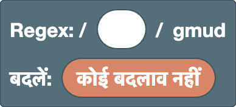
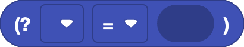
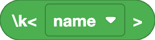
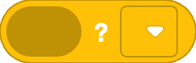
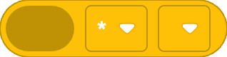
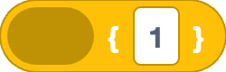
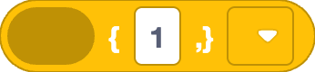
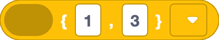

[ ] के अंदर
बदलावबदलने वाले टेक्स्ट के अंदर
मूल
वह मूल ब्लॉक जिसमें regex और बदलने वाला टेक्स्ट रहता है। वर्कस्पेस में यह ठीक एक ही होता है।
मूल (Regex / बदलें)

regex और बदलने वाला टेक्स्ट बनाने का मूल ब्लॉक। यह हमेशा वर्कस्पेस में रहता है और इसे हटाया नहीं जा सकता।
- Regex स्लॉट: पैटर्न यहाँ रखें। शुरुआत में यह एक टेक्स्ट फ़ील्ड होता है, इसलिए आप regex सीधे लिख सकते हैं। राइट-क्लिक → "ब्लॉक में बदलें" से लिखा हुआ regex ब्लॉकों में बदल जाता है।
- बदलें स्लॉट: जब तक यह "कोई बदलाव नहीं" है, परिणाम में मेल खाने वाले हिस्से हाइलाइट होते हैं। बदलाव ब्लॉक जोड़ने पर बदला हुआ परिणाम दिखता है।
flags gmud पर तय हैं।
g(global): केवल पहला ही नहीं, हर मेल ढूँढता हैm(multiline):^और$पूरे टेक्स्ट के ही नहीं, हर पंक्ति की शुरुआत और अंत पर मेल खाते हैंu(unicode): इमोजी जैसे अक्षरों को एक अक्षर मानता है, और\p{...}को चालू करता हैd(hasIndices): हर समूह कहाँ मेल खाया, यह भी दर्ज करता है (परिणाम के दिखने पर इसका असर नहीं होता)
उदाहरण
- Regex
5, बदलें6→1525बन जाता है1626(हर मेल बदल जाता है)
स्थिति
ये ब्लॉक किसी अक्षर से नहीं, बल्कि किसी स्थिति से मेल खाते हैं। ये शून्य अक्षरों से मेल खाते हैं, और दूसरे ब्लॉकों के साथ मिलाकर बताते हैं कि मेल कहाँ होना चाहिए।
पंक्ति की शुरुआत (^)
पंक्ति की शुरुआत की स्थिति। यह किसी अक्षर से नहीं, केवल स्थिति से मेल खाता है।
यह संपादक m flag का उपयोग करता है, इसलिए यह पूरे टेक्स्ट की शुरुआत पर ही नहीं, हर पंक्ति की शुरुआत पर मेल खाता है।
उदाहरण
^a→aaa(केवल पहला a)
पंक्ति का अंत ($)
पंक्ति के अंत की स्थिति। यह किसी अक्षर से नहीं, केवल स्थिति से मेल खाता है।
यह संपादक m flag का उपयोग करता है, इसलिए यह पूरे टेक्स्ट के अंत पर ही नहीं, हर पंक्ति के अंत पर मेल खाता है।
उदाहरण
a$→aaa(केवल आखिरी a)
शब्द की सीमा (\b / \B)
शब्द के किनारे की स्थिति।
ड्रॉपडाउन से प्रकार चुनें।
\b: शब्द की सीमा, यानी\wअक्षर (अक्षर, अंक या_) और किसी दूसरे अक्षर (या टेक्स्ट के किनारे) के बीच की स्थिति\B: ऐसी स्थिति जो शब्द की सीमा नहीं है
उदाहरण
\bcat\b→cat concat(केवल पूरे शब्द के रूप में cat)
ध्यान दें
\w केवल ASCII अक्षरों, अंकों और _ को शामिल करता है, इसलिए é जैसे चिह्न वाले अक्षर और देवनागरी जैसी गैर-लैटिन लिपियाँ शब्द के अक्षर नहीं मानी जातीं।
ऐसे टेक्स्ट में सीमा वहाँ नहीं हो सकती जहाँ आप उम्मीद करते हैं (उदाहरण के लिए, \b café के अंदर, é से ठीक पहले आती है)।
आगे देखना / पीछे देखना ((?=) / (?!) / (?<=) / (?<!))

जाँचता है कि अंदर का पैटर्न मौजूदा स्थिति के ठीक बाद (या ठीक पहले) आता है या नहीं। यह केवल स्थिति बताता है, इसलिए अंदर का पैटर्न मेल का हिस्सा नहीं बनता।
- पहला ड्रॉपडाउन: खाली हो तो आगे देखना (बाद में क्या है, यह जाँचता है),
<हो तो पीछे देखना (पहले क्या है, यह जाँचता है) - दूसरा ड्रॉपडाउन:
=का अर्थ "है",!का अर्थ "नहीं है"
उदाहरण
\d+(?=px)→100px and 200em(केवल वे संख्याएँ जिनके बाद px है)(?<=\$)\d+→$30 and 30€(केवल $ के बाद की संख्याएँ)
अक्षर
ये ब्लॉक तय करते हैं कि किन अक्षरों से मेल खाना है। जो ब्लॉक अक्षर वर्ग [ ] के अंदर भी काम करते हैं, उन पर "अक्षर वर्ग" टैग लगा है।
टेक्स्ट (स्वतंत्र इनपुट)
आप जो लिखते हैं, वह वैसा ही regex (या बदलने वाले टेक्स्ट) का हिस्सा बन जाता है। आप कितने भी अक्षर लिख सकते हैं।
उदाहरण
cat→cats and dogs
ध्यान दें
. * + ? ( [ जैसे अक्षरों का regex में विशेष अर्थ होता है।
उसी अक्षर से मेल खाने के लिए उसे \. की तरह एस्केप करें, या एस्केप किया गया अक्षर ब्लॉक का उपयोग करें।
कोई भी अक्षर (.)
न्यूलाइन को छोड़कर किसी भी एक अक्षर से मेल खाता है।
उदाहरण
a.c→abc a-c ac
ध्यान दें
इसे अक्षर वर्ग के अंदर उपयोग नहीं किया जा सकता ([.] का अर्थ केवल बिंदु अक्षर है)।
अंक / शब्द अक्षर (\d / \D / \w / \W)
ड्रॉपडाउन से प्रकार चुनें।
\d: एक अंक ([0-9])\D: एक अक्षर जो अंक नहीं है\w: एक अक्षर, अंक या_([A-Za-z0-9_])\W: एक अक्षर जो अक्षर, अंक या_नहीं है
उदाहरण
\d+→Price: 120 USD
ध्यान दें
\d और \w केवल ASCII को शामिल करते हैं। चिह्न वाले अक्षर (é, ü), देवनागरी जैसी गैर-लैटिन लिपियाँ और फ़ुल-विड्थ अंक (１２３) शामिल नहीं हैं।
इनके लिए Unicode गुण का उपयोग करें।
व्हाइटस्पेस (\s / \S)
ड्रॉपडाउन से प्रकार चुनें।
\s: एक व्हाइटस्पेस अक्षर (स्पेस, फ़ुल-विड्थ स्पेस, टैब, न्यूलाइन आदि)\S: एक अक्षर जो व्हाइटस्पेस नहीं है
उदाहरण
\S+→foo bar(स्पेस से अलग किए गए दो शब्द)
Unicode गुण (\p{} / \P{})
किसी एक अक्षर से उसके प्रकार (उसके Unicode गुण) के आधार पर मेल खाता है।
- पहला ड्रॉपडाउन:
pहो तो उस प्रकार के अक्षर,Pहो तो उस प्रकार के अलावा अक्षर - दूसरा ड्रॉपडाउन: खाली हो तो सामान्य श्रेणी (अक्षर, संख्या, प्रतीक, ...),
Script=हो तो लिपि (ग्रीक, सिरिलिक, ...) - टेक्स्ट फ़ील्ड: गुण का नाम
अक्सर उपयोग होने वाले नाम:
- सामान्य श्रेणियाँ:
L(अक्षर),N(संख्या),P(विराम चिह्न),S(प्रतीक) - लिपियाँ:
Latin,Greek,Cyrillic,Han(चीनी अक्षर)
उदाहरण
\p{Script=Greek}+→alpha αβγ\p{L}+→café 123(\wके विपरीत, इसमें चिह्न वाले अक्षर भी शामिल हैं)
ध्यान दें
अंक, स्पेस और ज़्यादातर विराम चिह्न जैसे अक्षर, जो कई लिपियों में साझा होते हैं, किसी खास लिपि के नहीं बल्कि Script=Common के होते हैं।
इन्हें शामिल करने के लिए इन्हें अक्षर वर्ग में जोड़ें, जैसे [\p{Script=Greek}\d]।
बाहरी लिंक
-
Unicode character class escape (MDN, अंग्रेज़ी):
\p{}कैसे लिखें और कौन-से गुण उपयोग कर सकते हैं (सामान्य श्रेणियाँ,Script=लिपियाँ, औरEmojiजैसे गुण), इसकी जानकारी
टैब (\t)
एक टैब अक्षर। बदलने वाले टेक्स्ट में यह टैब जोड़ता है।
उदाहरण
- Regex
,, बदलें\t→a,bबन जाता हैa⇥b(टैब से अलग)
न्यूलाइन (\n)
एक न्यूलाइन अक्षर। बदलने वाले टेक्स्ट में यह नई पंक्ति जोड़ता है।
उदाहरण
- Regex
,, बदलें,\n→a,bबन जाता हैa,⏎b(हर कॉमा के बाद नई पंक्ति)
एस्केप किया गया अक्षर (\/ \. \( आदि)
regex में विशेष अर्थ वाले अक्षर को सामान्य अक्षर की तरह मानता है। ड्रॉपडाउन से अक्षर चुनें।
-
पैटर्न और अक्षर वर्ग:
/ \ ^ $ ( ) . ? [ ] * { } | +उपयोग कर सकते हैं।-केवल अक्षर वर्ग के अंदर उपयोग हो सकता है (ताकि यहa-zजैसी सीमा से अलग पहचाना जाए)। -
बदलाव:
$को छोड़कर सभी उपयोग कर सकते हैं (ये\के बिना, वही अक्षर बन जाते हैं)।$जोड़ने के लिए$$ब्लॉक का उपयोग करें।
उदाहरण
1\.5→1.5 105(बिंदु अक्षर से ही मेल खाता है)
अक्षर वर्ग ([ ] / [^ ])
अंदर रखी चीज़ों के आधार पर एक अक्षर से मेल खाता है। स्लॉट की संख्या बदलने के लिए गियर आइकन का उपयोग करें।
ड्रॉपडाउन से प्रकार चुनें।
- खाली (
[ ]): अंदर के अक्षरों में से कोई एक ^([^ ]): एक अक्षर जो अंदर के किसी भी अक्षर जैसा नहीं है
अंदर टेक्स्ट, \d \w, \s, \p{}, टैब, न्यूलाइन, एस्केप किया गया अक्षर और सीमा (a-z) ब्लॉक रख सकते हैं।
राइट-क्लिक → "बाहरी इनपुट" से स्लॉट ऊपर-नीचे लग जाते हैं, जिससे लंबी सामग्री पढ़ना आसान होता है।
उदाहरण
[aeiou]→hello[^0-9]+→12abc34
सीमा (a-z)
ऐसे एक अक्षर से मेल खाता है जिसका अक्षर कोड दोनों अक्षरों के बीच हो। हर फ़ील्ड में एक अक्षर (या \- जैसा एक एस्केप) लिखें।
उदाहरण
[a-f]+→xcafey[α-ω]+→αβγABC(छोटे ग्रीक अक्षर)
ध्यान दें
सीमा अक्षर कोड के क्रम पर चलती है। [A-z] में छह अक्षर [ \ ] ^ _ ` भी शामिल हो जाते हैं, जो Z और a के बीच आते हैं।
केवल अक्षरों के लिए A-Z और a-z दो सीमाएँ रखकर [A-Za-z] बनाएँ।
जोड़ / विकल्प
ये ब्लॉक कई ब्लॉकों को मिलाते हैं। जोड़ उन्हें बाएँ से दाएँ क्रम में रखता है, और विकल्प उनमें से किसी एक से मेल खाता है। स्लॉट की संख्या बदलने के लिए गियर आइकन का उपयोग करें।
जोड़
अंदर रखी चीज़ों को बाएँ से दाएँ क्रम में जोड़ता है। स्लॉट की संख्या बदलने के लिए गियर आइकन का उपयोग करें।
राइट-क्लिक → "बाहरी इनपुट" से स्लॉट ऊपर-नीचे लग जाते हैं, जिससे लंबी सामग्री पढ़ना आसान होता है।
उदाहरण
^,\d+और$को जोड़ें →^\d+$(वे पंक्तियाँ जिनमें केवल अंक हैं)
विकल्प (|)
अंदर रखी चीज़ों में से किसी एक से मेल खाता है। विकल्प बाएँ से दाएँ जाँचे जाते हैं, और जो पहले मेल खाता है वही उपयोग होता है। स्लॉट की संख्या बदलने के लिए गियर आइकन का उपयोग करें।
राइट-क्लिक → "बाहरी इनपुट" से स्लॉट ऊपर-नीचे लग जाते हैं, जिससे लंबी सामग्री पढ़ना आसान होता है।
उदाहरण
cat|dog→a cat and a dog
ध्यान दें
| अपने पहले और बाद की पूरी चीज़ों को अलग कर देता है, इसलिए दूसरे ब्लॉकों से जोड़ते समय इसे (?:) में रखें।
उदाहरण के लिए, "a|b" के बाद "c" जोड़ने पर a|bc बनता है, जिसका अर्थ है "a" या "bc"।
"a या b, फिर c" के लिए (?:a|b)c का उपयोग करें।
समूह
ये ब्लॉक पैटर्न को एक समूह बनाते हैं, या मेल खाए हिस्से को बाद में उपयोग के लिए दर्ज (कैप्चर) करते हैं। कैप्चर किए गए हिस्से बैकरेफ़रेंस और बदलने वाले टेक्स्ट में उपयोग हो सकते हैं।
कैप्चर न करने वाला समूह ((?:))
अंदर के पैटर्न को एक इकाई बनाता है। इसे बैकरेफ़रेंस या बदलाव के लिए कोई संख्या नहीं मिलती।
ब्लॉक अपने आप समूह नहीं बनते, इसलिए दोहराव या विकल्प (|) की सीमा तय करने के लिए इसका उपयोग करें।
उदाहरण
(?:ab)+→abababc(ab को एक इकाई के रूप में दोहराता है)
कैप्चर करने वाला समूह (( ))
अंदर के पैटर्न को एक इकाई बनाता है और मेल खाए हिस्से को दर्ज (कैप्चर) करता है।
कैप्चर किया गया हिस्सा बैकरेफ़रेंस में, और बदलने वाले टेक्स्ट में $1 के रूप में उपयोग हो सकता है।
समूहों को बाएँ से दाएँ (उनके ( आने के क्रम में) 1, 2, 3, ... संख्या मिलती है। नामित समूह भी गिने जाते हैं।
उदाहरण
- Regex
(\d+)-(\d+), बदलें$2-$1→12-34बन जाता है34-12
नामित समूह ((?<name>))
नाम वाला कैप्चर करने वाला समूह। कैप्चर किया गया हिस्सा नामित बैकरेफ़रेंस में, और बदलने वाले टेक्स्ट में $<name> के रूप में उपयोग हो सकता है।
ड्रॉपडाउन में "समूह नाम बनाएँ…" से नाम बनाएँ। नाम अक्षर से शुरू होना चाहिए और उसमें केवल अक्षर, अंक और _ हो सकते हैं।
उदाहरण
- Regex
(?<year>\d{4})-\d{2}, बदलें$<year>→2025-08बन जाता है2025
बैकरेफ़रेंस (\1)
उसी टेक्स्ट से मेल खाता है जिसे उस संख्या वाले समूह ने कैप्चर किया था। ड्रॉपडाउन से समूह संख्या चुनें।
उदाहरण
(\w)\1→book(एक ही अक्षर लगातार दो बार)
ध्यान दें
नामित समूह भी संख्या में गिने जाते हैं। साथ ही, ड्रॉपडाउन की संख्याएँ वर्कस्पेस में मौजूद समूह ब्लॉकों की संख्या से बनती हैं। Regex स्लॉट में टेक्स्ट के रूप में लिखे गए समूह नहीं गिने जाते।
नामित बैकरेफ़रेंस (\k<name>)

ब्लॉक">उसी टेक्स्ट से मेल खाता है जिसे नामित समूह ने कैप्चर किया था। ड्रॉपडाउन से समूह का नाम चुनें।
उदाहरण
(?<q>["'])\w+\k<q>→"abc" 'def"(एक ही तरह के उद्धरण चिह्नों में बंद टेक्स्ट)
दोहराव
दोहराव ब्लॉक केवल अपने ठीक पहले वाली एक चीज़ को दोहराते हैं।
अंदर कई अक्षर हों तो केवल आखिरी अक्षर दोहराया जाता है (abc+ केवल c को दोहराता है)।
उन्हें साथ में दोहराने के लिए (?:) का उपयोग करें।
ध्यान दें
एक दोहराव के अंदर दूसरा दोहराव रखने (नेस्ट करने) से मेल बहुत धीमा हो सकता है।
उदाहरण के लिए, (?:a+)+$ को aaaaaaaaaaaaaaaaaaaaaaaaaaaaab जैसे टेक्स्ट पर चलाने से, जो अंत में असफल होता है, जाँचे जाने वाले संयोजन लंबाई के साथ घातीय रूप से बढ़ते हैं, और ब्राउज़र रुक सकता है।
(?:a+)+ का अर्थ a+ जैसा ही है, इसलिए जहाँ हो सके नेस्ट करने से बचें।
0 या 1 बार (?)

अंदर का पैटर्न हो तो 1 बार, न हो तो 0 बार मेल खाता है (यानी वह वैकल्पिक है)।
ड्रॉपडाउन से प्रकार चुनें।
- खाली (
?): 1 बार मेल खाने को प्राथमिकता देता है ?(??): 0 बार मेल खाने को प्राथमिकता देता है
उदाहरण
colou?r→color colour- Regex
(\d)?(\d+), बदलें[$1][$2]→123बन जाता है[1][23] -
Regex
(\d)??(\d+), बदलें[$1][$2]→123बन जाता है[][123](??के साथ पहला समूह हो सके तो कुछ नहीं लेता, इसलिए सभी अंक दूसरे समूह में जाते हैं।??से फ़र्क तभी पड़ता है जब उसके बाद वाला हिस्सा भी वही अक्षर ले सकता हो)
0 या अधिक / 1 या अधिक बार (* / +)

अंदर के पैटर्न को दोहराता है।
- पहला ड्रॉपडाउन:
*हो तो 0 या अधिक बार,+हो तो 1 या अधिक बार, जितना हो सके उतना - दूसरा ड्रॉपडाउन: जितना हो सके उतना कम दोहराने के लिए
?चुनें (*?+?)
उदाहरण
a+→caaat-
Regex
<.+?>, खाली बदलाव →<p><b>1</b> + <i>2</i> = 3</p>बन जाता है1 + 2 = 3(केवल टैग हटते हैं) -
?के बिना<.+>पहले<से आखिरी>तक सब कुछ एक ही मेल मानता है, इसलिए सब कुछ हट जाता है
फ़र्क देखने के लिए "HTML" उदाहरण में ? जोड़कर और हटाकर देखें।
ठीक N बार ({N})

अंदर के पैटर्न को ठीक N बार दोहराता है।
उदाहरण
\d{3}→1234567
N या अधिक बार ({N,})

अंदर के पैटर्न को N या अधिक बार दोहराता है।
ड्रॉपडाउन से प्रकार चुनें।
- खाली (
{N,}): जितना हो सके उतना अधिक दोहराता है ?({N,}?): जितना हो सके उतना कम दोहराता है
उदाहरण
\d{2,}→1 22 333
N से M बार ({N,M})

अंदर के पैटर्न को कम से कम N और अधिक से अधिक M बार दोहराता है। M, N से छोटा नहीं हो सकता।
ड्रॉपडाउन से प्रकार चुनें।
- खाली (
{N,M}): जितना हो सके उतना अधिक दोहराता है ?({N,M}?): जितना हो सके उतना कम दोहराता है
उदाहरण
\d{2,3}→12345
बदलाव
बदलाव ब्लॉकों को मूल ब्लॉक के बदलें स्लॉट से जोड़ें। बदलने वाले टेक्स्ट में टेक्स्ट, टैब, न्यूलाइन और एस्केप किया गया अक्षर ब्लॉक भी उपयोग कर सकते हैं।
बदलाव जोड़
बदलने वाले टेक्स्ट के अंदर, अंदर रखी चीज़ों को बाएँ से दाएँ क्रम में जोड़ता है। स्लॉट की संख्या बदलने के लिए गियर आइकन का उपयोग करें।
राइट-क्लिक → "बाहरी इनपुट" से स्लॉट ऊपर-नीचे लग जाते हैं, जिससे लंबी सामग्री पढ़ना आसान होता है।
उदाहरण
[,$&और]को जोड़ें → बदलने वाला टेक्स्ट[$&]। Regex\d+के साथa1बन जाता हैa[1]
$ अक्षर ($$)
बदलने वाले टेक्स्ट में $ अक्षर जोड़ता है। बदलने वाले टेक्स्ट में $ का विशेष अर्थ होता है, इसलिए सामान्य $ को $$ लिखा जाता है।
उदाहरण
- Regex
\d+, बदलें$$$&→100बन जाता है$100
मेल खाया हुआ टेक्स्ट ($&)
मेल खाया हुआ टेक्स्ट वैसा ही जोड़ता है।
उदाहरण
- Regex
\d+, बदलें($&)→a1 b22बन जाता हैa(1) b(22)
मेल से पहले का टेक्स्ट ($`)
लक्ष्य टेक्स्ट में मेल से पहले का पूरा हिस्सा जोड़ता है।
उदाहरण
- Regex
=, बदलें=$`→a=बन जाता हैa=a
मेल के बाद का टेक्स्ट ($')
लक्ष्य टेक्स्ट में मेल के बाद का पूरा हिस्सा जोड़ता है।
उदाहरण
- Regex
=, बदलें$'=→=bबन जाता हैb=b
समूह संदर्भ ($1)
उस संख्या वाले समूह ने जो टेक्स्ट कैप्चर किया, उसे जोड़ता है। ड्रॉपडाउन से समूह संख्या चुनें।
उदाहरण
- Regex
(\d+)-(\d+), बदलें$2-$1→12-34बन जाता है34-12
ध्यान दें
नामित समूह भी संख्या में गिने जाते हैं। साथ ही, ड्रॉपडाउन की संख्याएँ वर्कस्पेस में मौजूद समूह ब्लॉकों की संख्या से बनती हैं। Regex स्लॉट में टेक्स्ट के रूप में लिखे गए समूह नहीं गिने जाते।
नामित समूह संदर्भ ($<name>)
नामित समूह ने जो टेक्स्ट कैप्चर किया, उसे जोड़ता है। ड्रॉपडाउन से समूह का नाम चुनें।
उदाहरण
- Regex
(?<year>\d{4})-\d{2}, बदलें$<year>→2025-08बन जाता है2025